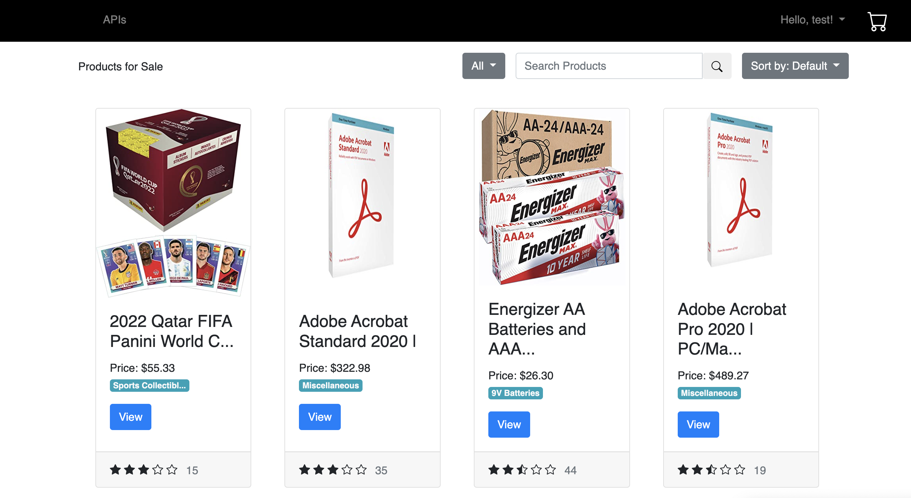

Mini-amazon: Ask me about this project! It was a mock-up of Amazon with focus on PostgreSQL and database management. (Unfortunately, I do not have access to the virtual machine that contained the database, and the website requires a 1.5 hour build.)
{kind=link}
Stanley Black & Decker Mechanical Engineering Intern: I was in charge with teardowns, which is a process through which a current product is torn down alongside competitor products and observing differences and discussing with plant manager and engineers of other domains, marketing, etc.
{kind=link}
Research project with Dr. Neacsiu: I helped debug a lot of the Matlab code utilized as a GUI for misophonia tests. The test comprised of a graphical interface that prompted study participants to rate different, possibly-triggering sounds on different scales. I also utilized AcqKnowledge Data Acquisition and Analysis Software and coded much of the Matlab to communicate via Serial port to AcqKnowledge devices.
It was a position as a quasi-IT manager.
A good portion of this position also required learning about how ECG and heartbeat BPM, skin conductivity, among others, are manifested.
{kind=link}
I'm thinking about starting a business! I'm not very much sure what it will be in, but I plan on something in manufacturing. Of course, this will be a side project and never be my full-time position, but from advice from my EGR 590 professor Rob Olsen (who worked at P&G for ~35 years), I believe this to be a project for eye-opening revelations about how a product gets from idea to factory to consumer. (Image from gettyimages.com)
{kind=link}
Web development! I'm trying to learn Frontend development on my own using "The Odin Project". This website is a representation of my studies so far, but this website obviously does not utilize JavaScript and is purely HTML/CSS. My GitHub has some more examples of my practices with web development.
The Odin Project My GitHub